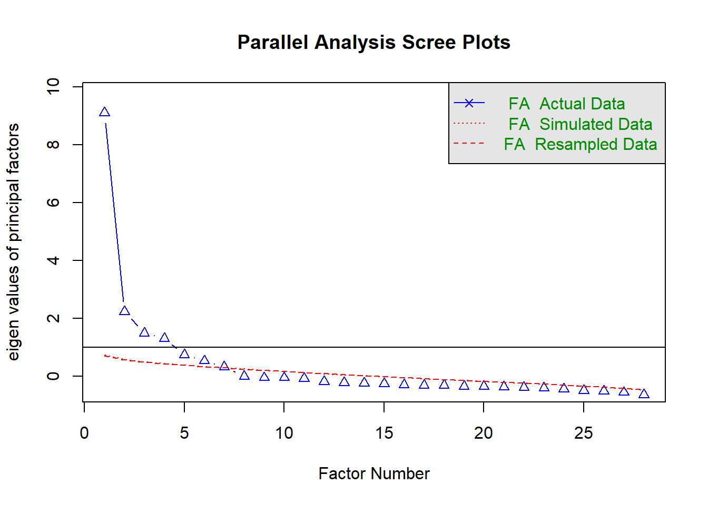

Partial-Least Square SEM (PLS-SEM)
1 Sample study
- Journal article: Young people’s perceived service quality and environmental performance of hybrid electric bus.
- Author: Zial Haque and Tehjeeb Noor
- DOI Link
- Download the dataset here
2 Libraries
# Library
library(tidyverse)
library(readxl)
library(janitor)
library(seminr)
library(psych)
library(MVN)
library(semTools)3 Data
## data
case_data <- read_excel("00_data/e_bus_customer_satisfaction.xlsx") %>%
clean_names()
case_data_items <- case_data %>%
select(bt1:bt7, bd1:bd4, emp1:emp5, cs1:cs3, ep1:ep4, ls1:ls5)4 Exploratory factor analysis
4.1 Scree plot
## Scree plot using parallel analysis
fa.parallel(case_data_items, fa = "fa")
Parallel analysis suggests that the number of factors = 7 and the number of components = NA 4.2 Factor extraction
## Factor loading
bus_fa <- fa(r = case_data_items,
nfactors = 6,
rotate = "varimax")
print(bus_fa$loadings, sort = TRUE, cutoff = 0.4)
Loadings:
MR2 MR1 MR3 MR4 MR6 MR5
ls1 0.820
ls2 0.891
ls3 0.828
ls4 0.806
ls5 0.599
bt1 0.673
bt2 0.666
bt4 0.549
bt5 0.680
bt6 0.578
bt7 0.550
ep1 0.864
ep2 0.900
ep3 0.690
ep4 0.705
emp1 0.688
emp2 0.662
emp3 0.636
emp4 0.697
emp5 0.502
bd1 0.679
bd2 0.640
bd3 0.676
bd4 0.629
cs1 0.774
cs2 0.817
cs3 0.768
bt3 0.476
MR2 MR1 MR3 MR4 MR6 MR5
SS loadings 3.477 3.363 3.081 2.658 2.429 2.297
Proportion Var 0.124 0.120 0.110 0.095 0.087 0.082
Cumulative Var 0.124 0.244 0.354 0.449 0.536 0.6185 Partial-least square SEM
5.1 Specifying the measurement model
pls_mm_ebus <-
constructs(
composite("tangible", multi_items("bt", c(1:2, 5:7))),
composite("drivers_quality", multi_items("bd", 1:4)),
composite("empathy", multi_items("emp", 1:5)),
composite("env_perf", multi_items("ep", 1:4)),
composite("customer_sat", multi_items("cs", 1:3)),
composite("life_sat", multi_items("ls", 1:5))
)
plot(pls_mm_ebus)5.2 Specifying the structural model
pls_sm_ebus <-
relationships(
paths(from = c("tangible", "drivers_quality", "empathy", "env_perf"),
to = "customer_sat"),
paths(from = "customer_sat", to = "life_sat")
)
plot(pls_sm_ebus)5.3 Estimating PLS-SEM model
pls_model_ebus <-
estimate_pls(
data = case_data,
measurement_model = pls_mm_ebus,
structural_model = pls_sm_ebus
)
plot(pls_model_ebus)summary_pls_model_ebus <- summary(pls_model_ebus)
summary_pls_model_ebus
Results from package seminr (2.3.2)
Path Coefficients:
customer_sat life_sat
R^2 0.448 0.077
AdjR^2 0.440 0.074
tangible 0.179 .
drivers_quality 0.146 .
empathy 0.310 .
env_perf 0.237 .
customer_sat . 0.278
Reliability:
alpha rhoC AVE rhoA
tangible 0.830 0.880 0.595 0.831
drivers_quality 0.856 0.902 0.698 0.857
empathy 0.825 0.876 0.586 0.840
env_perf 0.920 0.944 0.808 0.926
customer_sat 0.941 0.962 0.895 0.944
life_sat 0.903 0.929 0.724 0.911
Alpha, rhoC, and rhoA should exceed 0.7 while AVE should exceed 0.55.4 Bootstraping PLS-SEM
## bootstrapping PLS-SEM model
boot_pls_model_ebus <- bootstrap_model(seminr_model = pls_model_ebus,
nboot = 1000)
## summary results
summary_boot_pls_model_ebus <- summary(boot_pls_model_ebus, alpha = 0.10)5.5 Factor loadings
# DT::datatable(summary_boot_pls_model_ebus$bootstrapped_loadings %>% round(3))
summary_boot_pls_model_ebus$bootstrapped_loadings Original Est. Bootstrap Mean Bootstrap SD T Stat.
bt1 -> tangible 0.763 0.761 0.037 20.707
bt2 -> tangible 0.766 0.764 0.035 22.046
bt5 -> tangible 0.767 0.766 0.031 24.360
bt6 -> tangible 0.790 0.789 0.029 27.564
bt7 -> tangible 0.772 0.771 0.033 23.713
bd1 -> drivers_quality 0.834 0.834 0.020 40.731
bd2 -> drivers_quality 0.823 0.821 0.026 31.741
bd3 -> drivers_quality 0.858 0.858 0.017 50.149
bd4 -> drivers_quality 0.826 0.825 0.026 31.461
emp1 -> empathy 0.768 0.765 0.032 23.723
emp2 -> empathy 0.799 0.796 0.027 29.528
emp3 -> empathy 0.699 0.693 0.043 16.113
emp4 -> empathy 0.794 0.793 0.029 27.106
emp5 -> empathy 0.762 0.763 0.028 27.264
ep1 -> env_perf 0.905 0.904 0.018 49.581
ep2 -> env_perf 0.947 0.947 0.009 100.483
ep3 -> env_perf 0.875 0.877 0.020 42.788
ep4 -> env_perf 0.866 0.865 0.028 30.901
cs1 -> customer_sat 0.944 0.945 0.012 81.730
cs2 -> customer_sat 0.960 0.960 0.006 148.250
cs3 -> customer_sat 0.934 0.933 0.015 60.609
ls1 -> life_sat 0.874 0.871 0.023 37.425
ls2 -> life_sat 0.915 0.914 0.016 56.960
ls3 -> life_sat 0.885 0.885 0.028 32.094
ls4 -> life_sat 0.854 0.850 0.024 35.493
ls5 -> life_sat 0.711 0.709 0.051 13.901
5% CI 95% CI
bt1 -> tangible 0.695 0.813
bt2 -> tangible 0.705 0.817
bt5 -> tangible 0.712 0.814
bt6 -> tangible 0.737 0.832
bt7 -> tangible 0.714 0.818
bd1 -> drivers_quality 0.798 0.865
bd2 -> drivers_quality 0.776 0.861
bd3 -> drivers_quality 0.828 0.884
bd4 -> drivers_quality 0.779 0.865
emp1 -> empathy 0.709 0.812
emp2 -> empathy 0.748 0.838
emp3 -> empathy 0.618 0.759
emp4 -> empathy 0.741 0.836
emp5 -> empathy 0.713 0.806
ep1 -> env_perf 0.871 0.931
ep2 -> env_perf 0.929 0.961
ep3 -> env_perf 0.841 0.907
ep4 -> env_perf 0.817 0.907
cs1 -> customer_sat 0.924 0.962
cs2 -> customer_sat 0.949 0.970
cs3 -> customer_sat 0.905 0.956
ls1 -> life_sat 0.830 0.904
ls2 -> life_sat 0.886 0.938
ls3 -> life_sat 0.835 0.923
ls4 -> life_sat 0.808 0.885
ls5 -> life_sat 0.618 0.7825.6 Validity and reliability
Construct reliability or factor reliability assesses the extent to which a group of items is consistent in what it intends to measure. We want to test whether the items we selected are reliable or not.
Examples of reliability measurement are Cronbach’s alpha, Rho A and Rho C. The three reliability measurement are similar to what they represent. Thus, the interpretation is the same.
Higher values indicate a higher level of reliability. Reliability values of 0.70 and above are satisfactory to a good measure of reliability.
Results show that all factors are above the recommended threshold of 0.70, indicating items used to measure the factors are reliable.
Convergent validity assesses how well the identified items as indicators for a construct measure the expected construct.
For example, emphaty was measured using 5 indicators, the construct validity can be used to determine how well those 5 indicators measure the factor of Job Satisfaction.
The Average Variance Extracted (AVE) is a measurement for convergent validity. An AVE greater than 0.50 provides evidence for convergent validity.
Results show that AVE for all factors is above the recommended threshold of 0.50, indicating the measured factors passed the convergent validity test.
# DT::datatable(summary_pls_model_ebus$reliability %>% round(3))
## Reliability measurment
summary_pls_model_ebus$reliability alpha rhoC AVE rhoA
tangible 0.830 0.880 0.595 0.831
drivers_quality 0.856 0.902 0.698 0.857
empathy 0.825 0.876 0.586 0.840
env_perf 0.920 0.944 0.808 0.926
customer_sat 0.941 0.962 0.895 0.944
life_sat 0.903 0.929 0.724 0.911
Alpha, rhoC, and rhoA should exceed 0.7 while AVE should exceed 0.55.7 Discriminant validity
The discriminant validity assesses the extent to which a factor or construct is distinct from other constructs.
The idea is to identify unique items as measurements for an intended factor. If the selected items uniquely measure the intended factors, then that factor should not be highly correlated to other factors.
Fornell-Larcker criterion and the heterotrait-monotrait criterion are the most commonly used measurements for discriminant validity.
5.7.1 Fornell-Larcker Criterion
Italicized and bolded values are the factors. While non-bolded values are the inter-correlation of the factors.
To establish discriminant validity, the off-diagonal values should be less than AVE or the diagonal values (e.g., 0.853, 0.876, 0.855, …).
Result shows that the factor’s AVE is higher than the off-diagonal values.
## Fornell-Larcker criterion results
summary_pls_model_ebus$validity$fl_criteria tangible drivers_quality empathy env_perf customer_sat life_sat
tangible 0.772 . . . . .
drivers_quality 0.562 0.835 . . . .
empathy 0.377 0.524 0.765 . . .
env_perf 0.471 0.421 0.380 0.899 . .
customer_sat 0.489 0.509 0.544 0.500 0.946 .
life_sat 0.326 0.249 0.237 0.293 0.278 0.851
FL Criteria table reports square root of AVE on the diagonal and construct correlations on the lower triangle.5.7.2 Heterotrait-Monotrait ratio
To establish discriminant validity, the HTMT value should be lower than the recommended threshold of 0.90 or less than 0.85 for a more conservative threshold (Henseler et al., 2015)
When the HTMT value is high (above 0.90) it may suggest one or some indicators in one construct is highly related to another construct. It means the construct is not conceptually distinct.
Using the HTMT criterion, values are below 0.90 or 0.85, which suggests constructs passed the discriminant validity test.
summary_pls_model_ebus$validity$htmt tangible drivers_quality empathy env_perf customer_sat life_sat
tangible . . . . . .
drivers_quality 0.667 . . . . .
empathy 0.440 0.606 . . . .
env_perf 0.535 0.470 0.424 . . .
customer_sat 0.551 0.565 0.596 0.532 . .
life_sat 0.378 0.279 0.262 0.320 0.300 .5.7.3 VIF
summary_pls_model_ebus$vif_antecedentscustomer_sat :
tangible drivers_quality empathy env_perf
1.624 1.783 1.445 1.392
life_sat :
customer_sat
.